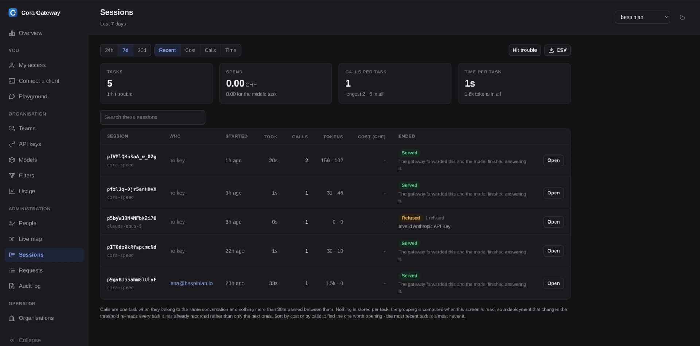

Keera Gateway
Un point d'accès pour chaque modèle de l'entreprise
Entre vos équipes et tous les LLM se trouve une seule base URL : les modèles de Keera, vos propres fine-tunes et les fournisseurs externes là où la politique l'autorise. Politiques, budgets et audit au même endroit.
Comment ça marche
Tout ce qui appelle un modèle chez vous pointe vers la même adresse. La passerelle vérifie chaque requête, l'écrit au journal et la transmet.
Vos outils
- Agent de code dans le terminal et dans l'IDE
- Applications internes et copilotes
- Notebooks et jobs CI
Keera Gateway
- Identité et équipe depuis votre IdP
- Vérifier politique, quota et budget
- Masquer secrets et données personnelles
- Router vers le modèle autorisé
Modèles
- Keera Deep, Swiss et Fast en Suisse
- Vos fine-tunes et clusters sur site
- Fournisseurs externes, ouverts par politique
↓ Chaque requête dans le journal d'audit et dans votre SIEM
Compatible OpenAI : les SDK et agents existants basculent avec une seule variable d'environnement.
Interface web ou CLI, le même contrôle
Vous administrez la passerelle depuis une interface web qui ne cache rien : politiques, budgets, équipes, modèles et chaque session sont à quelques clics. Si vous préférez taper ou automatiser, prenez la CLI keera - même portée, scriptable, prête pour votre pipeline. Les deux écrivent la même politique versionnée : ce que vous cliquez dans le navigateur, la CLI le lit - et inversement.
Et comme chaque requête passe par le même point d'accès, vous voyez enfin ce que votre entreprise fait vraiment avec les LLM : tokens, coûts et requêtes refusées par équipe, modèle et période - dans le navigateur ou en CSV pour vos propres analyses.

Quatre choses qu'elle contrôle
Un point d'accès qui vous appartient - et quatre décisions qu'il prend pour chaque requête.
Fin du shadow AI
Bloquez la sortie directe au proxy : chaque requête IA de l'entreprise devient visible.
Une politique par équipe
Quels modèles, dépôts et classes de données sont accessibles : écrit comme une politique versionnée, appliquée à chaque requête.
Des coûts attribuables
Dépenses par équipe, dépôt et centre de coûts, avec des limites de budget fermes et une alerte avant la facture.
Audit et masquage
Secrets et données personnelles tombent en périphérie. Prompt, modèle, décision et identité partent, immuables, vers votre SIEM.
Fonctionnalités
La passerelle est plus qu'un proxy. Voici quelques-unes de ses fonctionnalités les plus puissantes - chacune dans l'interface web et dans la CLI.
Garde-fous
Modèles autorisés, limites de débit et budgets - par organisation, équipe et clé. Versionnés, vérifiés à chaque requête, refusés en cas de doute.
Filtres
Un petit modèle lit chaque requête et en retire secrets, noms de clients et données personnelles - ou l'arrête. On mesure d'abord en mode ombre, puis on applique.
Routeurs
Un petit modèle choisit qui répond : le modèle local rapide pour les petites retouches, le grand seulement quand la tâche l'exige.
Carte en direct
Clients, passerelle et modèles en image, avec une ligne en travers : au-dessus, ce qui reste sur votre réseau ; en dessous, ce qui en sort. Les requêtes la traversent en direct.
Sessions
Une consigne à l'agent, c'est quarante appels. Coût, durée et issue s'affichent par tâche - le chiffre dont on peut vraiment parler.
SSO et rôles
Connexion via votre propre fournisseur d'identité, droits issus de vos groupes d'annuaire. Chaque modification passe dans le journal d'audit.
Essayer Keera
Nous accompagnons une équipe, la connectons à vos dépôts et vous remettons les chiffres. Après 30 jours, c'est vous qui décidez.